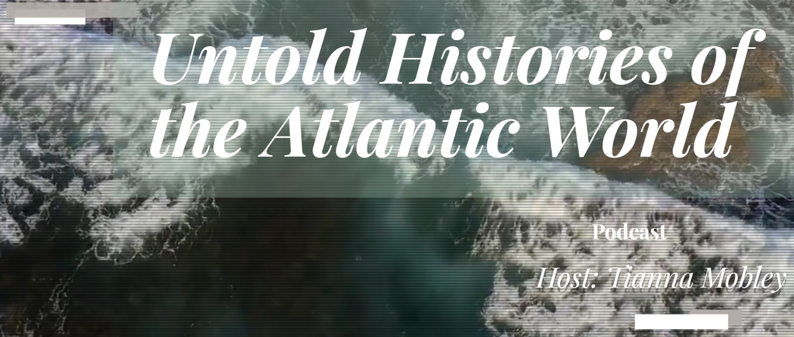

The School of Salamanca and the Intellectual Roots of Latin American Revolution
Johannes Schmidt · Podcast
I joined Tiana Mobley on "Untold Histories of the Atlantic World" to discuss the School of Salamanca, the Spanish Atlantic world, and the Hispanic intellectual traditions that helped shape early Latin American revolutionary projects.
“These thinkers (...) were saying, natives have rights, they have rights to property, they have a right to choose their own religion.”
“Latin America attempted to preserve the old freedoms that were gained from those ancient Hispanic formulations of power and authority.”
“When you look at early revolutionary documents, from the earliest days of the revolution all the way up to the latest Mexican Constitution, you see remnants of this pactum translationis.”
Transcript
Click any passage to jump to that point in the episode.
Loading transcript…